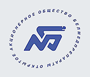
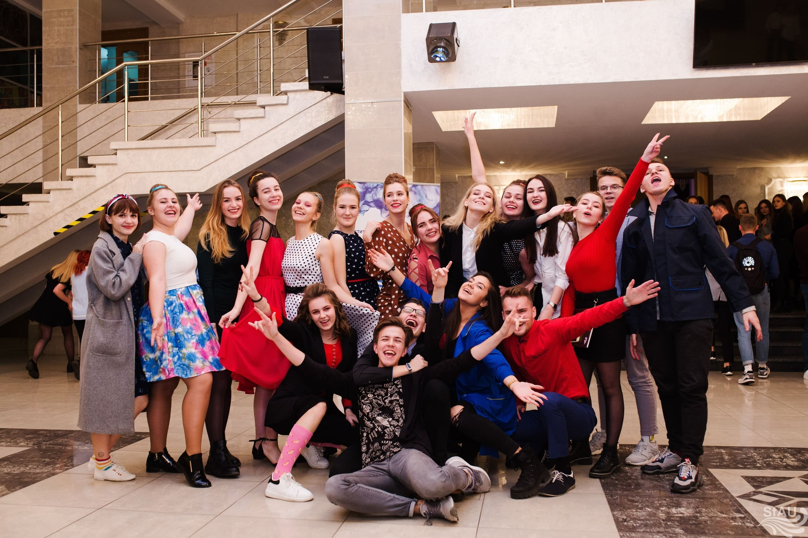
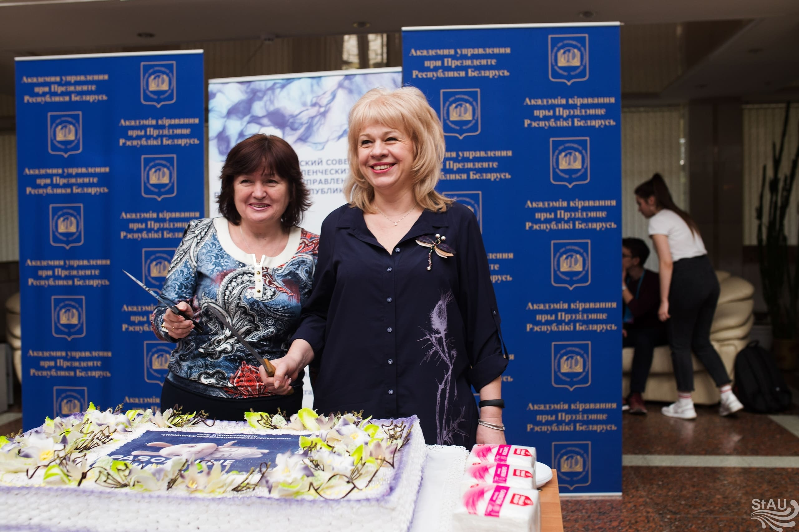
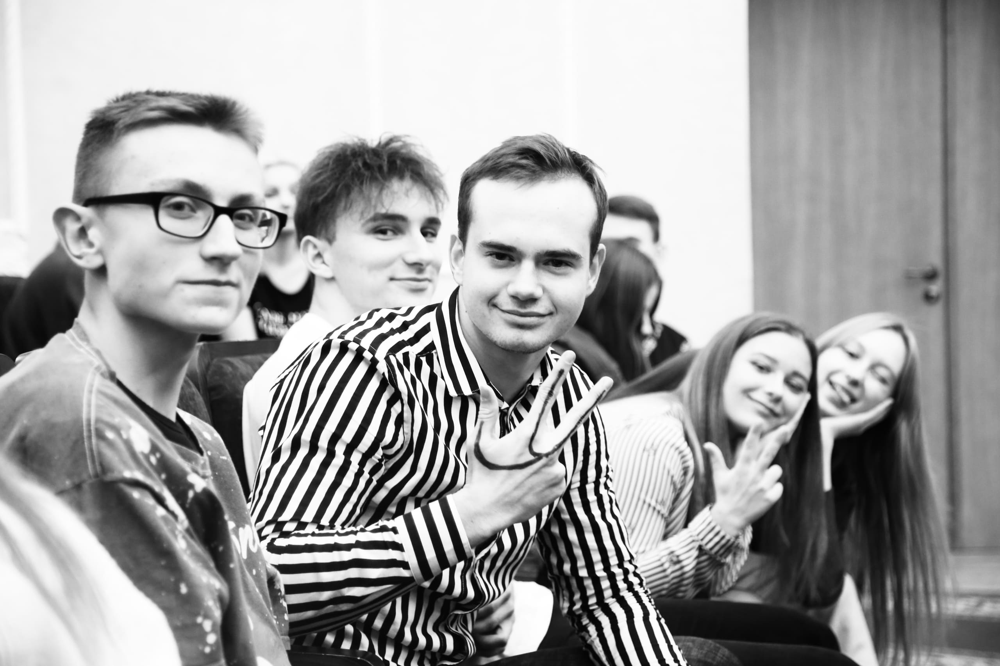
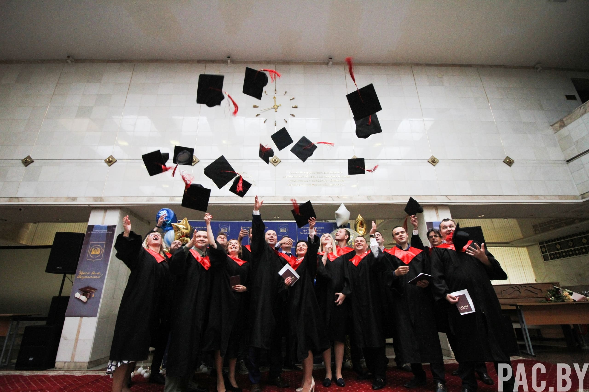
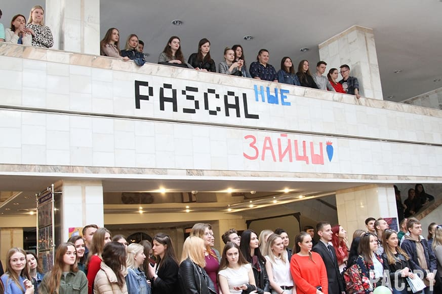
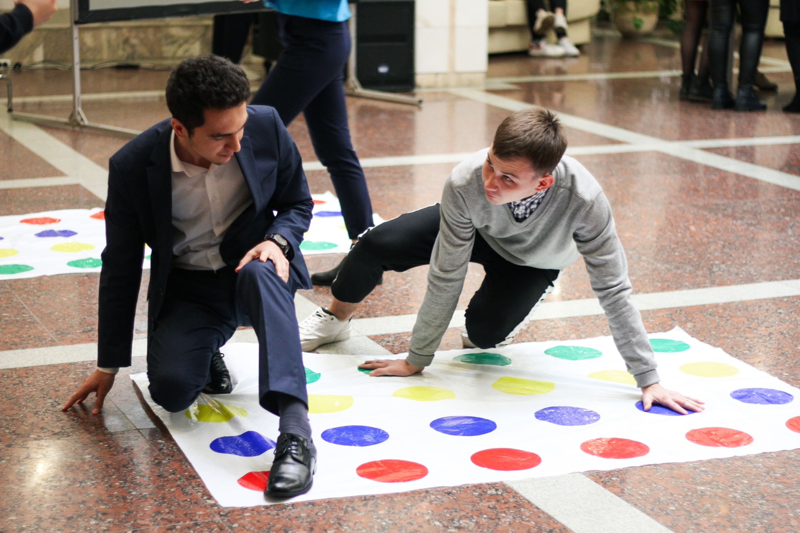
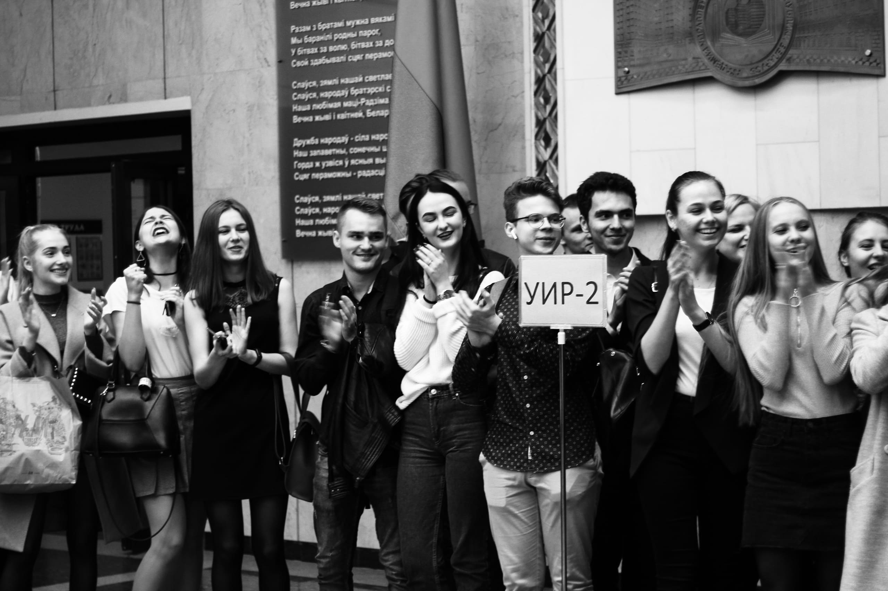

The Academy of Public Administration under the President (IRM)
Information resource management
The future starts here!
Don't miss the opportunity to become a part of the new generation of leaders in Belarus!
Applicant
от 100
belarusian rubles scholarship
37%
graduates manage the largest projects
48
disciplines studied
1215+
graduates
Passing points:
CT
russian language
mathematics
english language
2018
budget
341
paid
239
2019
budget
341
paid
264
Places of employment of graduates IRM:
EPAM Systems
Минский городской исполнительный комитет
IBA GROUP
Национальный статистический комитет РБ
Ernst and Young
Минская центральная таможня
Белнефтестрах

Белмедпрепораты
iTechArt Group
Itransitions
Indicative list of positions for graduates IRM
Sphere of management
Project manager
Administrator
Chief executive officer
Information Technology Manager
IT sphere
Business analyst
Database administrator
Web developer
Tester
Developer
Sphere of economics
Computing Center Economist
Business Sales Specialist
Financier
Analyst







We-are
The link between the IT sphere and the business community
Optimization of business processes
One of the most demanded specialties
A solid foundation for the start of a rapid career growth
You will learn how to identify business problems, find the most effective solution and act as an intermediary between the customer and the team of programmers
Stages that you will go through:
Identifying the needs of the customer, understanding the problem he wants to solve
Formation of the solution concept
Formation of a concept into a technical assignment with specific requirements for a future product
Detailing each requirement in the form of specifications
You will learn how to define connections between departments, implement functional management, automate business. You will have an understanding of the organization as an integral system in development, the factors of its activities.
The uniqueness of this specialty lies in the construction of training based on integrated knowledge from the areas of management, economics, mathematical modeling and information technology.
Specialty formula:
You will learn how to define your goal for several years ahead, break it down into steps and choose a strategy for achieving it. You will learn how to organize work with a mentor, build a personal brand and create a CV.
Teachers
Beloded Nikolay Ivanovich
professor, candidate of technical sciences
Courses taught: "Operating Systems"; "Algorithmization and Programming"; "Database systems"; "Programming technologies".
Research interests: integrated management information systems, innovations in education.
Author of more than 140 publications, including 10 educational and 4 teaching aids.
associate professor, candidate of technical sciences
Has over 90 scientific works, including 7 copyright certificates for inventions, is the author of 4 textbooks, co-author of 3 textbooks on information technology.
Author of over 100 scientific publications, including textbooks "Information technologies of a manager", "Situational analysis and modeling based on information technologies of databases"
Courses taught: "Information technologies of marketing" "Information resources" "Web-design and computer graphics"
Research interests: information technology in various fields of activity; personnel management information systems; development of education.
Teaching disciplines: "Web-design and computer graphics", "Algorithmization and programming", "Economics of information resources, technology systems", "Information management", "Information theory", "Econometrics", "Situational analysis and modeling of management decisions."
Courses taught: "Information Technologies of Marketing"; "Office work in public service"; "World and National Information Resources".
Research interests: information and analytical support of the process of retraining of leading personnel of the Republic of Belarus, e-government technology.
Author of 26 publications, including 5 teaching aids.
associate professor, candidate of physical and mathematical sciences
Teaching disciplines: "Higher mathematics", "Discrete mathematics" Research interests are methods of data processing and analysis on a PC. Author of over 30 scientific publications. "Discrete Math".
associate professor, candidate of technical sciences
Courses taught: "Information systems and technologies", "Information technologies", "Management of information systems", "Computer networks and Internet technologies", "Algorithmization and programming" (practice). Author of over 40 publications, including 4 inventions.
Courses taught: "Algorithmization and Programming", "Database Systems", "Administration of Information Systems", "WEB Technologies", "Operating Systems and Computer Networks"
Author of 15 publications, including 5 teaching aids.
associate professor, candidate of physical and mathematical sciences
From 1983 to 2001 he worked as a research assistant at the Institute of Solid State and Semiconductor Physics of the National Academy of Sciences of Belarus. Research interests: mathematical modeling of economic processes and systems. Author of over 20 scientific publications.
Courses taught: "Standards of information systems and technologies", "Office work", "Systems for managing structures and data flows in public administration." Author of 183 publications, including 12 textbooks, teaching and learning materials.
Who am I after graduation? Economist? Programmer? Or is it a manager?
We congratulate you, you have come to the right place. You will try yourself in all areas and understand what is closer to you, and you will also be able to apply all your skills from different areas in one specialty, for example: a business analyst or an IT manager. In your diploma, you are “manager-economist of information systems”.
Will I see the President ???
The President visits the Academy to improve something here, and then the students have the opportunity to ask him questions and offer fresh ideas.
What is the likelihood of not being on the list of "settled in a social behavior"?
It doesn't work that way. The Academy provides a social behavior for all nonresident students.
Is it difficult to adapt to the Academy?
No. The first 3 months are helped by the guys from the 2nd year - student curators. Together you will prepare for events and thanks to them you will feel like a part of the IRM family.
If everything is so formal with you, is a white shirt and tie a must?
No, smart casual is ideal for Academy students.
Will I be able to prove myself in something other than studying?
Of course yes! We have 3 organizations: Student Council, BRYU and Trade union committee. The Trade union committee organizes small and atmospheric events inside the Academy (Freshman Day, Hug Day, Maslenitsa, etc.). The Student Council also organizes events within the Academy, however, on a larger scale ("Business Card" for the 1st course, New Year's Masquerade Ball, Student Curator, Miss Academy of Management, etc.). The Belarusian Republican Youth Union sells faces outside the Academy, i.e. offsite events: meeting guests, presenting awards, attending various conferences. You will definitely be able to find what you like!
And if I missed a lecture, are there electronic notes to restore it?
We have a distance education system - there are all electronic materials for IRM.
Are there any additional opportunities for developing your professionalism?
Yes, specifically for IRM students in 2009, the Information and Cybernetic Club "IC-Club" was created with the aim of developing students' information and communication professionalism necessary for managing information systems.
Sections: 1) Business analysis (Shastitko D.V., Shesholko V.K.)
2) IStudy center (Beloded N.I.)
3) Maintaining social networks ( UIR.BY The future starts here, Graduates association)
The head of the club is Plyushch Oleg Borisovich
Chairperson - Mikhalenya Galina, 4th year student, specialty IRM
Graduates reviews
Director of Business Development
Artyom Karpechenko
- Tell us about your work at the moment? I am the Director of Business Development at Blinger.io. For 4 years we have grown the company from 5 people to 20, raised 3 rounds of investments. The last round was with a valuation of the company at $ 5 million. We have attracted hundreds of clients from small online stores to large banks and airlines. How has studying with us influenced your future career? I learned to study, to understand different areas from economics to management, from programming to law. Even at the Academy, due to the relatively small number of students, an excellent community is created.
At the moment, I hold the position of Middle Business Analyst at eWave. Now, in the role of BA, I lead several foreign projects (Australia, America), I help a little at the stage of pre-sales (we analyze new projects and test them), and I
I am one of the business analysts who runs the in-house school of junior business analysts. (We tell new guys about the company, BA work, teach basic BA skills, as well as the specifics of work in the company). To be honest, I really enjoy my work, although sometimes there are difficult and stressful days. I don't know if this is necessary, but usually my day is structured as follows (communication with a client (Australia), working with a team, writing analytical documents, working at a BA school,
How do you like the academy - the general impression is this: I have never regretted that I studied at this university. I came to study on the advice of a relative, who also graduated from UIR. Also
before admission, I wrote to students on Vkontakte, I found out their reviews, I never received a bad response from them 2.What are its advantages - a very good place, a lot of budget places (at least in the year of our recruitment), the scholarship is higher than in other universities, class teachers in all specialties, its own sports complex, the academy meets halfway to people who find themselves places for practice / distribution, any teacher can help with writing a term paper / diploma, even if he does not supervise you, 1 change of training was very helpful 3 what are the advantages of our specialty - cool teachers, both in knowledge and in human relations (they let them go to work, were allowed to come to take laboratory tests with other groups), a good technical base, subjects not from any one, definitely
In general, I graduated from the Academy in 2015. I studied at UIR when I was still 5 years old. Time flew by so quickly. You even plunged me a little into nostalgia.
At the moment I live and work in Estonia in a food company. My position is called Software automation engineer, test lead. In fact, every day I write code (java) and micromanage test processes on a project. How I ended up in Estonia - not on purpose. I never had an idea to leave Belarus, but at some point I was offered a cool project. We agreed that I would come for a year, and then we’ll see, but the year somehow dragged on
In general, if they ask me if you work in your specialty, I will say yes. Of course, we were not taught at UIR directly on test automation, but we were given basic knowledge in various fields. Based on which I, probably, was able to somehow better understand for myself what I would like to do specifically. For example, I liked algorithms, databases, discrete mathematics, English, etc. In general, if you think so, this is all, directly or indirectly, I use in my work.
I remember how many people at work were surprised that I had an IT background from the Academy of Management. I was their first such person at that time. Usually they took people from BSUIR or BNTU. Then there were more people from the Academy, so I think I managed to create a good reputation for UIR at that time.
Good evening) At the moment I am a Middle Business Analyst at eWave. Now, in the role of BA, I lead several foreign projects (Australia, America), I help a little at the stage of pre-sales (we analyze new projects and test them), and I
I am one of the business analysts who runs the in-house school of junior business analysts. (We tell new guys about the company, BA work, teach basic BA skills, as well as the specifics of work in the company). To be honest, I really enjoy my work, although sometimes there are difficult and stressful days. I don't know if this is necessary, but usually my day is structured as follows (communication with a client (Australia), working with a team, writing analytical documents, working in a BA school, communicating with a client (America)). And so in a circle, of course, not all days are the same, but the activity that is constantly there is communication with the client and the team.
In fact, the UIR gave me a base that allowed me to successfully enroll in courses (yes, to get into BA courses, I had to pass an interview)
and, of course, an IT base is necessary at work
It helped a lot that the academy gave me an understanding of such points as: programming, databases, IP design and the concept of IP in general, taught me to model processes. Many of this is not taught in courses, but knowledge of this is necessary in the work, because the work of a BA is not just a conversation with a client - it is also the ability to offer a solution to a client from a technical point of view, write a technical specification for developers, and give the client advice on technical aspects. All this is very important) It is also worth noting that we were given IT English at the Academy) it also helped me a lot, since I do not have a single Russian-speaking client, and I need to communicate a lot) To start work, I had enough knowledge of English - well, then , as they say, we learn at work.
Also, we had a few humanities subjects at the academy. When we studied, I did not understand why I needed them and what I generally do with these pairs, for example, in psychology or sociology. As a result, these subjects also turned out to be very useful, because when you work in a team with different people, everyone has their own character, worldview, you need to be able to understand everyone, adapt, and unite the team. You also need to understand the cultural characteristics when communicating with a client, be able to properly conduct a dialogue with him in any situation: be it pleasant things or moments when you need to defend your team.
Dasha Samilo
Test Engineer
Do you like the Academy? The general impression is this: I have never regretted that I studied at this university. I came to study on the advice of a relative, who also graduated from UIR. Also
before admission, I wrote to students on Vkontakte, I found out their feedback, I never received a bad response from them 2.What are its advantages - a very good place, a lot of budget places (at least in the year of our recruitment it was), the scholarship is higher than in other universities, class teachers in all specialties, its own sports complex, the academy meets halfway to people who find themselves places for practice / distribution, any teacher can help with writing a term paper / diploma, even if he does not supervise you, 1 change of training was very helpful 3 what are the advantages of our specialty - cool teachers both in knowledge and in human relations (they let them go to work, were allowed to come to take laboratory tests with other groups), a good technical base, subjects not from any one specific area, which makes it possible to choose the future professions, English 3 years (super useful for IT people), good educational program 4.how did your studies at the academy affect your future place of work (where and by whom do you work now) - almost from the very beginning of the training, the teachers told where the graduates go, what specialties are relevant (mainly IT areas), how people are actively moving up the career ladders, going abroad, etc. Also, many are aware of which companies offer which courses, where to go for training, in general they can give good advice based on their experience. I now work as a test engineer in an IT company, I have been working since the 5th semester, I am engaged in manual and automated testing. Why did you join the testers? Initially, I wanted IT, but to start from the very bottom, to find out how everything works, it works, because you can grow and change activities (for programming, BA, design) without any problems. Also, many graduates of the academy go to testing, since enough technical knowledge is given in the Academy to be better than graduates of foreign languages, etc., who usually also work as testers. I didn't want to start programming right away, since we have very little of it at the Academy, and, in principle, the training plan for the direction is not right.
Veronica Kramarenko
Software automation engineer, test lead
Do you like the Academy? In general, I graduated from the Academy in 2015. I studied at UIR when I was still 5 years old. Time flew by so quickly. You even plunged me a little into nostalgia.
At the moment I live and work in Estonia in a food company. My position is called Software automation engineer, test lead. In fact, every day I write code (java) and micromanage test processes on a project. How I ended up in Estonia - not on purpose. I never had an idea to leave Belarus, but at some point I was offered a cool project. We agreed that I would come for a year, and then we’ll see, but the year somehow dragged on
In general, if they ask me if you work in your specialty, I will say yes. Of course, we were not taught at UIR directly on test automation, but we were given basic knowledge in various fields. Based on which I, probably, was able to somehow better understand for myself what I would like to do specifically. For example, I liked algorithms, databases, discrete mathematics, English, etc. In general, if you think so, this is all, directly or indirectly, I use in my work.
I remember how many people at work were surprised that I had an IT background from the Academy of Management. I was their first such person at that time. Usually they took people from BSUIR or BNTU. Then there were more people from the Academy, so I think I managed to create a good reputation for UIR at that time.
Artyom Karpechenko
Director of Business Development
- Tell us about your work at the moment? I am the Director of Business Development at Blinger.io. For 4 years we have grown the company from 5 people to 20, raised 3 rounds of investments. The last round was with a valuation of the company at $ 5 million. We have attracted hundreds of clients from small online stores to large banks and airlines. How has studying with us influenced your future career? I learned to study, to understand different areas from economics to management, from programming to law. Even at the Academy, due to the relatively small number of students, an excellent community is created.